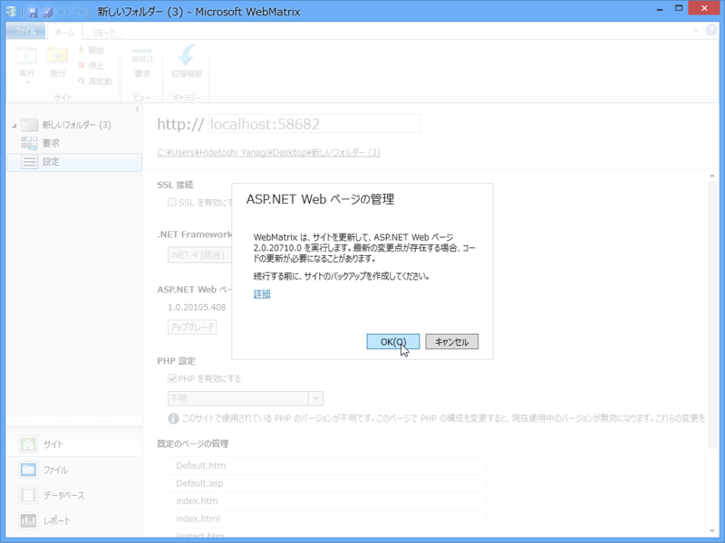

WebMatrix 2：フォルダーから Web サイトを作成する場合の注意点
公開日：

前々回（WebMatrix 2：フォルダーから Web サイトを作ってみる - だるろぐ）は、空のフォルダーから Web サイトを作って HTML ファイルを配置し、それをローカル Web サーバー（IIS Express 7.5）でホストするところまで進めましたが、ぶっちゃけこの方法はあまりお勧めしません。ちゃんと初期画面の［テンプレート］ボタンを利用して新しいサイトを作るようにしましょう。
なぜかというと、通常の作業フローとはちょっと外れているため、いくつか困ったことが発生するからです。

1. NuGet が使えない
リボン右端の［ギャラリー］ボタンを押しても、［拡張機能］ボタンしか出てきません。
つまり、NuGet ギャラリーが利用できません。
2. 実環境で動かすにはコンポーネントが足りません
［テンプレート］ボタンからサイトを作成すると、 App_Data フォルダや bin フォルダに ASP.NET の実行に必要な DLL が追加されます。しかし、空のフォルダーから Web サイトを作るとこれらが追加されないため、たとえば FTP でファイルをサーバーへ丸コピしても動作しません。
ローカルでは「WebMatrix 2」が気を利かせてくれるのでちゃんと動くのですけど。
解決策

というわけで、あまりお勧めできないのですけど……いろいろ試していてひとつ気が付きました。
一度 Windows Azure Web サイトへサイトを発行してしまうと、その過程でコンポーネントの追加が行われるようですね。NuGet ギャラリーも利用できるようになります*1。
スクリーンショットの右上と左に注目してください。[NuGet]ボタンが利用できるのと、App_Data フォルダや bin フォルダに ASP.NET の実行に必要な DLL が追加されているのが分かります。

ただし、“ASP.NET Web ページ”（ここでは Razor 記法＋その他コンポーネント群のことだと思ってくれていいと思います。）のバージョンは 1.0 です。

“ASP.NET Web ページ”の最新版は 2.0 なのでアップデートをお勧めします。1.0 と 2.0 の違いは……まぁ、また今度。
……どうでもいい Tips でしたね！
Windows Azure Web サイトは、基本的な機能であればタダで利用できます*2。次回はその登録・利用フローでも説明しようかと思います*3。